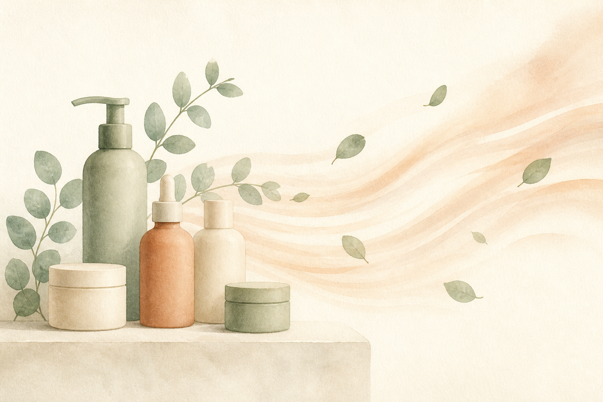
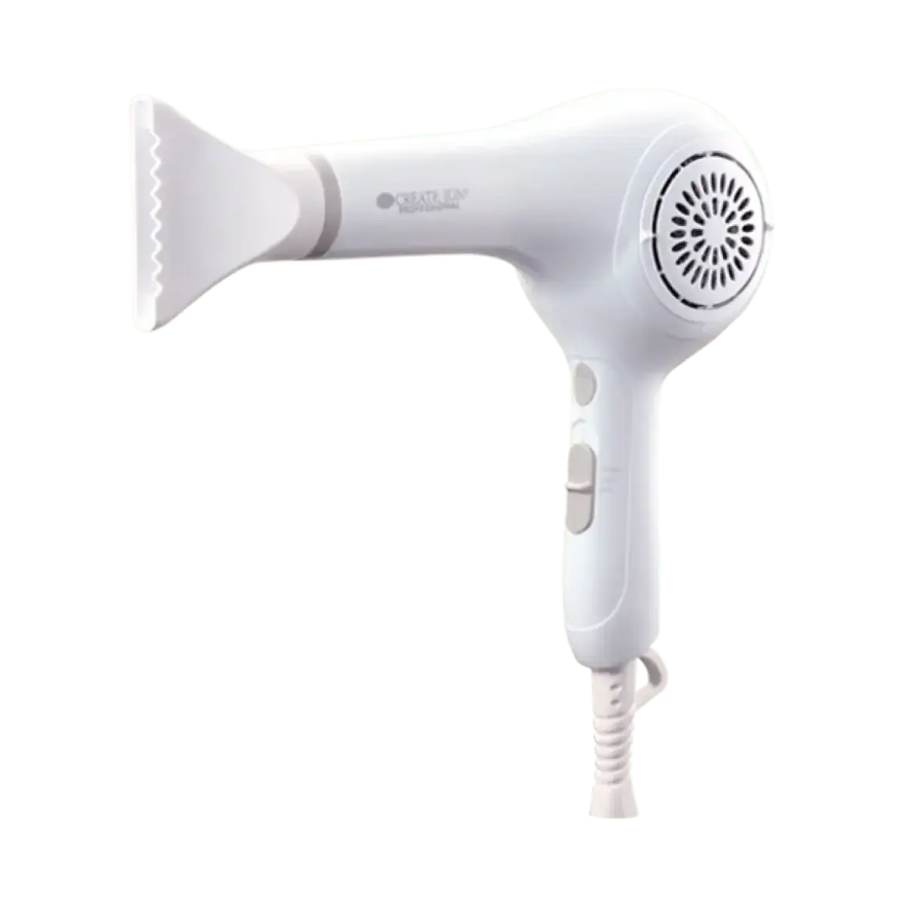

EMPATHY
こんな「ドライヤーだけは、選んだ記憶がない」、心当たりありませんか。
- いま使っているドライヤーを、いつ・いくらで買ったのか思い出せない
- 壊れていないから替えていない、という理由だけで何年も使っている
- シャンプーやトリートメントは吟味するのに、ドライヤーは「あるもの」で済ませている
- 乾かすのに時間がかかるので、途中で面倒になって半乾きでやめる日がある
- 冷風ボタンがあることは知っているが、使ったことがない
- 吸込口のホコリを掃除したことが一度もない
- ヘアケア＝髪に塗るもの、だと無意識に思っている
一つでも頷いたなら、あと3分だけ読み進めてほしいんです。
私はこのシリーズで、9回かけてアイテムを揃えてきました。合計¥42,936。第9弾でついに「シャンプー直後の毎日のトリートメント」まで埋めて、お風呂の中も外もひと通り揃った感覚がありました。
そのあと、9本を工程順ではなく「種類」で分けてみたんです。
シャンプー、トリートメント、ヘアマスク、洗い流さないトリートメント、バーム、香水オイル、スカルプエッセンス、プレトリートメント。──ここまで8本、全部「髪や頭皮につけるもの」でした。残りの1本が第7弾のスカルプブラシで、これは道具。でも手で動かすものです。
つまり9本とも、「髪につけるもの」か「手で触る道具」だった。
じゃあ、毎晩いちばん長く髪に当たっているものは何かというと。──ドライヤーの熱風でした。
そして私は、いま使っているドライヤーをいつ買ったのか思い出せません。壊れていないから替えていない。ただそれだけの理由で、たぶん何年も使い続けています。

IF NOTHING CHANGES
正直に言うと、いちばん引っかかったのは「古いドライヤーを使っていること」じゃありません。
塗るものに¥42,936、それを乾かす風に¥0という比率のほうです。
考えてみてください。9本のうち、洗い流さないトリートメントもバームもオイルも、使うタイミングは「乾かす前」か「乾かした後」です。つまりこのシリーズで揃えたものの多くは、ドライヤーの前後に挟まっている。
その真ん中にある行為だけ、9回とも一度も検討していませんでした。塗るところまでは吟味して、その直後に何分間なにを当てているかは考えたことがなかった。
仮に1日10分だとすると、1年でおよそ60時間です。トリートメントを髪に置いている時間より、たぶんずっと長い。しかも髪は濡れているときがいちばん無防備だとよく言われます。その状態で熱を当てている時間なので、本当ならケアの文脈で真っ先に見直してもよかった場所でした。
しかも、この状態はとても気づきにくい。ドライヤーは「壊れたら買う」ものだからです。シャンプーは切らせば選び直す機会が来るし、トリートメントも詰め替えのたびに一瞬考える。でもドライヤーは、動いている限り検討のタイミングが一生来ません。
半年後も、たぶん同じです。洗面台には11本目、12本目の新しいアイテムが増えていて、でも毎晩いちばん長く髪に当たっているのは、いつ買ったか思い出せないあの1台のまま。
いちばんもったいないのは、ここです。第1〜9弾で、"何を塗るか"の答えはもう出そろっているんです。出ていないのは、塗ったあとに何を当てているかのほうだけ。
──ただ、ここで急かすつもりはまったくありません。これはシリーズでいちばん高い買い物ですし、いま使っているものが問題なく動いているなら、それを使い切るのが順当だと思っています。この回でお伝えしたいのは「今すぐ買い替えて」ではなく、「そこも髪に触れている、と一度知っておいてほしい」だけです。
THE TURN
そこでたどり着いたのが、「クレイツ イオン ドライ SD-1200」でした。
ここで一つ、はっきりさせておきたいことがあります。第1〜9弾で紹介してきたものは、9本中8本が「髪につけるもの」でした。残る1本の第7弾スカルプブラシも、手で動かす道具です。
これは欠点ではありません。ケアの中心は、足りないものを足すことだからです。9本とも、その役割を果たしてくれました。
一方で今回のアイテムは、そもそも種類が違います。塗るものでも、手で動かす道具でもなく、電源を入れて熱と風を出す機械。シリーズで初めての家電になります。
言ってしまえば、第1〜9弾が"何を髪に足すか"。そしてこの1台が"何を髪に当てているか"。塗るものは9回で決まりました。10回目は、それを乾かす側です。
私がこの1台を選んだ理由は、大きく3つ。
シリーズ最大の空白「乾かす」を、初めて正面から扱える
第1弾のNo.6は「乾かす前に塗るもの」でした。塗るところまではやっていたのに、乾かす行為そのものは9回とも空白。毎晩必ず通るのに一度も検討していない、シリーズで唯一の場所でした。
効果の説明ではなく、風量という数字で選べる
イオンや遠赤外線の話は、正直なところ私には検証しようがありません。ただ「大風量11.5m/秒」というメーカー公表値は、早く乾く=熱に当たる時間が短くなる、という単純な理屈につながります。私はそこを見て選びました。
買い切りで、しかもシャンプーをした日は必ず使う
第7弾のブラシに続く2つ目の"減らないもの"です。ただしブラシと違って、これは使わない日がほぼありません。金額はシリーズ最高ですが、1日あたりで見ると景色が変わります(後述)。
「何を塗るか」から、「何を当てているか」へ。9回かけて塗るものを揃えてきたからこそ、その真ん中にあった10分に目が向きました。
※本商品は家電です。記載の仕様・技術に関する内容はメーカーの公表内容に基づくものであり、効果を保証するものではありません。感じ方には個人差があります。
THE PRODUCT
クレイツ イオン ドライ SD-1200とは
クレイツは、サロン向けのヘアアイロンやドライヤーを手がけているブランドです。第1〜9弾で登場したオラプレックス、ケラスターゼ、リンク、LOA、資生堂プロフェッショナル、SINN PURETE、ルベルとは重なりません。シリーズ初登場です。
そして商品の種類も、シリーズ初です。第1〜9弾は、化粧品が8本と、手で動かすブラシが1本。今回は電源を入れて使う家電。カテゴリそのものが変わる、シリーズ唯一の1台になります。

- タイプ
- ヘアドライヤー(シリーズ初の家電)
- 価格
- ¥9,350(税込)/ シリーズ最高価格。ただし消耗しない買い切り
- 位置づけ
- メーカーによる説明は「トータルバランスを追求したスタンダードドライヤー」
- 風量
- 11.5m/秒(メーカー公表値)。ロングヘアでも短時間で乾かせる設計とされています
- 風量調節
- HIGH(強風)/ LOW(弱風)の2段階
- 温度
- 冷風・温風/ 2段階温度調節
- 消費電力
- 1200W(温度・風量HIGH時)
- 重量
- 本体 約450g(コード込・ノズル除く約655g)/ ノズル約25g
- サイズ
- 約H235×W230×D85mm(ノズル除く)
- コード長
- 約3.0m
- お手入れ
- 吸込口のキャップが取り外せるので、ホコリの掃除ができる
- メーカー説明
- 「クレイツイオン ディフューザー」から高密度のクレイツイオンを放出し、遠赤外線が髪と地肌に作用するとされています
- ブランド
- クレイツ・シリーズ初登場
この1台のいちばんの特徴は、今のケアを1つも置き換えないという点です。シャンプーもトリートメントもオイルもバームもエッセンスもブラシも、今のまま。第1〜9弾で作った流れには、何も手を加えません。変わるのは、その流れの真ん中で当てている風だけです。
そして正直に書いておくと、私がこの機種を選んだ決め手は、イオンでも遠赤外線でもありませんでした。それらの効果は私には確かめようがないので、「メーカーがそう説明している」以上のことは書かないでおきます。
決め手になったのは、もっと単純な部分です。風量が大きいと、早く乾く。早く乾くということは、熱に当たっている時間が短くなる。髪が濡れているあいだが無防備だとよく言われることを踏まえると、この理屈がいちばん納得できました。
※上記の仕様・説明はすべてメーカーの公表内容に基づく記載です。効果を保証するものではなく、感じ方には個人差があります。
WHY IT WORKS
「で、結局それの何がいいの?」に、飾らず正直に答えます。
9回かけて「何を塗るか」を揃えてきたからこそ、10回目でようやく「何を当てているか」に目が向きました。これは、9本ぶん遠回りしたからこそ出てきた、私のいちばん正直な実感です。
※上記は仕様と使い勝手に関する説明です。効果には個人差があり、特定の結果を保証するものではありません。
WHY TRUST IT
正直に言うと、私は「イオンが出るから」だけでは商品を信じないタイプです。
それでもこの1台を紹介したいと思えたのは、こんな背景があるからです。
効果ではなく、仕様で判断できる部分がある
イオンや遠赤外線の効果は、正直なところ私には検証できません。だからそこは判断材料から外しました。代わりに風量、重量、コード長、温度調節という、確かめられる数字だけを見ています。ここが判断できる商品は、実はそう多くありません。
「足す」ではなく「減らす」方向の提案である
ケアを1つ増やすのではなく、熱に当たる時間のほうを短くする。9回続けて何かを足してきたシリーズの中で、初めて負担側を減らす回になりました。
ブランド内での位置づけが「スタンダード」と明示されている
同じクレイツには¥10,780、¥19,800、¥25,300の上位機もあります。その中でこれは標準機だと説明されている。「いちばん良いものです」ではなく「基準の1台です」と言われているほうが、最初の1台としては選びやすいと感じました。
掃除できる構造になっている
吸込口のキャップが外せます。ドライヤーは目詰まりすると風量が落ちますが、掃除できない構造だとそのまま使い続けることになる。長く使う前提の設計だと受け取りました。
¥9,350はシリーズ最高。それでも紹介する理由
第1弾¥3,740、第2弾¥4,180、第3弾¥4,290、第4弾¥7,260、第5弾¥8,800、第6弾¥5,776、第7弾¥2,200、第8弾¥3,740、第9弾¥2,950。合計¥42,936、平均¥4,771。第10弾は¥9,350で、これまでの最高だった第5弾を上回ります。ただしこれは減りません。9本の合計を「塗るもの」に使ってきた自分が、それを乾かす側に一度も出していなかった、という比率のほうが気になりました。
サロン専売品を、公式通販でそのまま買える
ALBUM ONLINE STOREは正規販売店です。家電は特に、保証や真贋の面で購入先が重要になるので、私は毎回ここを確認してから紹介しています。
WHAT PEOPLE NOTICE
こんな使用感(声の傾向)
家電なので、成分では語れません。だからこそ、盛らずに、使ってみて分かったことをそのまま整理してみます。
乾く時間について
いちばん分かりやすい変化はここでした。これまで「なんとなく長いな」と思いながら当て続けていたのが、明らかに短くなりました。髪質が変わったというより、当てている時間が減ったという話だと思っています。ちなみにタオルドライを丁寧にやるほど、この差はさらに大きくなります。
音について
風量が大きいぶん、静かではありません。深夜に集合住宅で使うことを考えている人は、そこは把握しておいたほうがいいと思います。ただ、当てている時間そのものは短くなるので、トータルの騒音時間で見ると単純比較にはならないかもしれません。
重さについて
本体約450g(コード込・ノズルを除くと約655g)。持った瞬間に軽いと感じるタイプではありませんが、腕を上げ続けたときの疲れ方が変わりました。私は途中で面倒になって半乾きでやめる日があったので、そこが減ったのは地味に大きいです。
コードの長さについて
約3.0mあります。これは買う前に注目していなかったのですが、実際にいちばん「毎日効くな」と思った部分でした。洗面所のコンセントの位置に姿勢を引っ張られなくなります。
冷風について
正直に言うと、私はこれまで冷風ボタンを使ったことがありませんでした。8割乾いたところで切り替える、という使い方を始めてから、翌朝の落ち着き方が変わった気がしています。ただこれは道具そのものより、使い方を変えた効果のほうが大きいかもしれません。
イオン・遠赤外線について
ここは正直に書きます。メーカーはクレイツイオンと遠赤外線について説明していますが、私にはその効果を検証する手段がありません。なので判断材料に入れていません。この回で私が評価しているのは、風量・重量・コード長・温度調節という、確かめられる部分だけです。
もちろん、髪の量も長さも人それぞれ。だからこそ、「自分の毎晩の10分がどう変わるか」で考えてみる価値がある道具だと思っています。
※上記は一般的な使用感の傾向および個人の感想であり、効果を保証するものではありません。
FAQ
よくある質問
今のドライヤーがまだ動いています。買い替えるべきですか?
シリーズでいちばん高いですが、それだけの価値がありますか?
イオンや遠赤外線には本当に効果がありますか?
第1〜9弾のケアと併用できますか?
音は大きいですか?
上位機種との違いは何ですか?
お手入れは必要ですか?
使うと髪が傷まなくなるということですか?
ABOUT THE PRICE
価格の考え方
クレイツ イオン ドライ SD-1200は ¥9,350(税込)。このシリーズで紹介してきた10個の中で、いちばん高い金額です。これまでの最高は第5弾の¥8,800だったので、更新してしまいました。
だから最初に、いちばん正直なことを書いておきます。これは今すぐ買うべきものではありません。いま使っているドライヤーが問題なく動いているなら、それを使い切ってからで十分です。壊れたときに、次の1台を選ぶ判断材料として思い出してもらえれば、それでいいと思っています。
そのうえで、数字の見え方だけ整理させてください。
これまでの9本を並べてみます。¥3,740 / ¥4,180 / ¥4,290 / ¥7,260 / ¥8,800 / ¥5,776 / ¥2,200 / ¥3,740 / ¥2,950。合計¥42,936、1本あたりの平均は¥4,771。今回の¥9,350は、その約2倍です。
ただ、これは減りません。第7弾のブラシに続く、シリーズ2つ目の買い切りです。しかもブラシと違って、シャンプーをした日は必ず使います。5年使う前提なら1日あたり約¥5.1。3年でも約¥8.5です。
ここで妙な符合がありました。前回の第9弾、毎日使うトリートメントは1mlあたり約¥4.9でした。毎日減っていくものと、毎日減らないものが、だいたい同じ日額になる。並べてみて、なるほどと思ったんです。金額の大きさと、1日あたりの重さは、必ずしも同じ方向を向いていない。
そしてもう一度、比率の話をさせてください。私はこのシリーズで、9本・合計¥42,936を「塗るもの」に使ってきました。同じ期間、それを乾かす側に使った金額は¥0です。塗るものに¥42,936、当てる風に¥0。──毎回この計算をして毎回笑っているのですが、私はどうやら、毎回どこか1箇所を完全に空白にしたまま買い物をしているらしいんです。
繰り返しになりますが、急いで買うものではありません。今のものが動いているなら、それが寿命を迎えるまでは今のままで大丈夫です。ただ、次に選ぶときには「ヘアケアの一部だ」という前提で選んでほしい。9回ぶん塗るものを吟味してきた人ほど、ここが空白なのはもったいないと思うんです。
※価格・在庫は変動します。最新情報は必ず商品ページでご確認ください。1日あたりの金額は使用年数を仮定した概算であり、耐久性・寿命は使用状況によって変わります。
BEFORE YOU GO
安心して試すために
「ドライヤーを替えるだけで、そんなに変わるの?」その気持ち、よく分かります。私も9回ぶん、そこを一度も疑いませんでした。ヘアケアといえば"何を塗るか"の話で、"何を当てているか"の話だとは考えたこともなかった。
だからこそ、この回は他の回といちばん違う言い方をしておきます。急がなくていいです。
これまでの9回は、どれも「試してみてほしい」と書いてきました。金額も¥2,200〜¥8,800で、合わなくても大きな損にはならない範囲でした。今回は¥9,350で、シリーズ最高です。合わなかったときの損も、これまでよりは大きい。
だから、いま使っているドライヤーが動いているなら、それを使い切ってください。この回は「買ってください」ではなく、「壊れたとき、次を適当に選ばないでください」という話です。
そのうえで、もし買い替えを考えるタイミングが来たなら。そのときは、風量・重さ・コードの長さ・温度調節という、確かめられる数字で選んでほしいと思っています。イオンや遠赤外線の説明は各社ありますが、そこは検証しようがない。私はそう割り切りました。
そして、いきなり10個すべてを揃える必要もまったくありません。第1〜9弾で紹介したケアを、まず自分のペースで試す。そのうえで「塗るものはひと通り揃ったな」と思えたときに、その真ん中にある10分を思い出してもらえれば十分です。
何を塗るかは9回で決まりました。10回目は、それに何を当てているかです。
※本商品は電気製品です。使用前に必ず取扱説明書と使用上の注意をご確認ください。コードを傷つけないよう扱い、吸込口は定期的に清掃してください。異常を感じた場合はただちに使用を中止してください。
LAST WORD
「洗う前」「洗う」「毎日のトリートメント」「乾かす前」「仕上げ」「週数回」「香り」「頭皮」「道具」。9回かけて、塗るものはもう出揃っています。
でも、それはぜんぶ「髪に足すもの」の話でした。
足したものに、そのあと何を当てているかの話は、9回とも一度も出てきていません。
このまま11本目の新しいアイテムを探し続けて、「まだ何か足りないのかも」と思いながらまた半年過ごすのか。それとも、毎晩10分の風のことを一度だけ思い出しておいて、次に買い替えるときの判断材料にするのか。
今日じゃなくていいんです。ただ、その日が来たときに、適当に選ばないでいてほしい。それだけの話です。
追伸
正直に言うと、この1台も「魔法の1台」ではありません。これは家電であり、髪が治る・傷まなくなるといった効果を持つものではない。使った翌朝に別人の髪になるわけでもありません。感じ方には個人差があります。
それでも私がこれを紹介したいのは、「髪に触れているのは、塗るものだけじゃない」を、10回目にしてやっと言葉にできたからです。第7弾では「実行を疑う」、第8弾では「順番を疑う」、第9弾では「もうやっている工程の中身を疑う」と書きました。今回わかったのは、そのどれとも違う場所に、毎晩10分の空白があったということでした。
10回に分けて紹介してきましたが、この10個を全部揃える必要はまったくありません。とくに今回は、急いでほしくない回です。市販品ジプシーだった頃の私は、うまくいかないたびに塗るものを買い替えていました。手も、道具も、風も、同じように毎日髪に当たっているとは考えたことがなかった。
もし、アイテムはひと通り揃っているのに、「まだ何か足りない気がする」がずっと消えていないなら。足りない最後の1つは、11本目のボトルではなく、毎晩10分あなたの髪に当たり続けている、あの風のほうかもしれません。今日は買わなくていいので、次に選ぶときのために覚えておいてください。